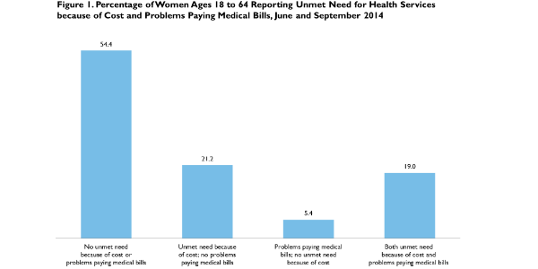

|  |
|
|||||||||||||||||||||||||||||||||||||||||||||||||||||||||||||||||
Health Care Costs Are a Barrier to Care for Many Women
Adele Shartzer, Sharon K. Long, and Sarah BenatarJanuary 7, 2015
Several provisions in the Affordable Care Act (ACA) could improve access to care and reduce women’s unmet health care needs and problems paying medical bills. First, the expansion of coverage to women who were previously uninsured through the ACA’s Medicaid expansion and health insurance Marketplaces could reduce unmet need; ample evidence has shown that women with insurance coverage are less likely to report access barriers than uninsured women (Salganicoff et al. 2014). Second, the ACA requires private plans to cover essential health benefits and recommended preventive services, including contraception, with no patient cost-sharing, which should reduce the out-of-pocket costs for these services. Further, many women may benefit from increased access to coverage because the ACA prohibits insurers from denying coverage because of a preexisting condition, which in the past commonly included pregnancy; the law also prohibits charging women higher premiums than men for the same insurance plan. Together, these provisions could substantially improve health care access and affordability for women.
Despite these provisions, many women continue to face barriers to needed services because of the costs of care. This may be especially true for the estimated 3.1 million uninsured women in states that have not elected to expand Medicaid coverage to adults with family income at or below 138 percent of the federal poverty level (FPL; to whom we refer as “low-income”) who are generally ineligible for subsidies under the new health insurance Marketplaces (Dorn, Buettgens, and Dev 2014).1 This brief assesses the extent of unmet need for health services because of costs and problems paying medical bills among women shortly after the implementation of the major coverage provisions of the ACA, highlighting ongoing access gaps as the ACA moves forward.
What We Did
This analysis uses data from the second and third quarters of the Health Reform Monitoring Survey (HRMS), fielded in June and September 2014, respectively, to describe unmet health care needs among women because of costs and problems paying medical bills. We compare unmet health need because of cost by gender and describe unmet health need among all nonelderly women (ages 18 to 64) by age group, family income, and health insurance coverage status. We compare unmet need among “low-income” women, “middle-income” women (those with family income between 139 and 399 percent of FPL), and “high-income” women (those with family income at or above 400 percent of FPL). The two insurance categories we examine are women who were uninsured for part or all of the past 12 months and women who had insurance coverage for all of the past 12 months. The latter category includes women with 12 months of coverage of any type, such as employer-sponsored insurance, Medicaid, or private nongroup coverage, as well as women who, although insured all year, switched between coverage types over the year.
The HRMS asks respondents whether they have experienced an unmet need for specific health services because of cost in the past 12 months. We group those services into the following categories:
We include a summary measure that describes the share of women who report an unmet need because of cost for any of these services.
We also present a measure of the financial strain of medical bills: whether the respondent or her or his family had problems paying or was unable to pay medical bills over the past 12 months.2 Unmet need for care because of cost and problems paying medical bills reflect different dimensions of financial barriers to care: the former are health services that were forgone because of concerns about cost and the latter are problems paying for care that was received. Thus, we include a summary measure that describes the share of women who reported both unmet need because of cost and problems paying medical bills, the share who reported unmet need because of cost only, the share who reported problems paying medical bills only, and the share who reported no financial barriers to care.
What We Found
Unmet health care needs because of cost are significantly more common among women than men: 40.2 percent of women and 29.5 percent of men report any unmet need (table 1). More than a quarter of women report unmet need because of costs for both medical services (25.8 percent) and dental care (28.5 percent), well above the 19.1 percent and 20.9 percent, respectively, reported by men. Women report more unmet need than men for every category examined. Women also report unmet need for family-planning services because of cost.3 Women are more likely than men to report that they or their family had problems paying medical bills in the past 12 months (24.4 percent compared with 16.6 percent). Altogether, 45.6 percent of women report either unmet need for health care because of costs or problems paying medical bills, compared with 34.2 percent of men (data not shown). About one in five women reports both unmet need for care because of cost and problems paying medical bills (19.0 percent, see figure 1); another one in four (26.6 percent) reports a financial barrier to care in one area or the other.
Unmet need because of costs, although an issue for women at all ages, is more pronounced for women ages 26 to 44 than for younger women (ages 18 to 25) and older women (ages 45 to 64; see figure 2). In particular, almost half (47.1 percent) of 26- to 35-year-old women report some type of unmet need because of costs, with unmet need for medical services, prescription drugs, and dental care particularly high. The exception to that pattern is unmet need both for mental health and substance abuse services and for family-planning services, where women ages 26 to 35 report levels of unmet need similar to those of younger women.
More than 1 in 10 women ages 18 to 25 reports going without needed family-planning services because of costs, including 9.0 percent who went without contraceptive prescriptions and 6.2 percent who went without other family-planning services (data not shown). Although sample sizes are small, the majority of young women with cost-related barriers to family-planning and mental health or substance abuse services face other unmet needs because of costs and problems paying medical bills (data not shown), suggesting wide-ranging problems with access to health care.
Unmet need for family-planning services is not an issue only for younger women. Though older women may use these services for birth control, women may also need contraceptive prescriptions and other family-planning services because the hormones they contain can address noncontraceptive health needs such as acne, menstrual cramps, migraines, or excess hair growth (Jones 2011). Finally, the share of women who report problems paying medical bills is similar and not statistically different across age groups, ranging from 23.0 percent in younger women to 27.4 percent in women ages 26 to 34 (data not shown).
Low-income women also report significantly higher rates of unmet need for health care because of cost than do high-income women (figure 3). More than half (56.0 percent) of low-income women report an unmet need for health care, including close to one-third (30 percent) with an unmet need for medical care, prescription drugs, and dental care. Though the levels of unmet need are lower, more than 10 percent of low-income women report unmet need for mental health or substance abuse services and for family-planning services because of cost. Low-income women are more likely to report having a problem in the family paying medical bills than high-income women: 34.8 percent versus 27.7 percent.
Health insurance coverage does not eliminate cost-related barriers to care for women. Though women who were uninsured for part or all of the past year report particularly high levels of cost-related barriers to care (figure 4), 33.5 percent of women who have had insurance coverage for all of the past 12 months also report an unmet need for at least one service in that time, and 20 percent report having problems paying medical bills in their family. Of note, nearly one in four (23.3 percent) women with full-year coverage reports unmet need for dental care because of cost, a benefit that is often not covered under private medical insurance plans or Medicaid.
What It Means
In June and September 2014, shortly after the implementation of the major coverage provisions of the ACA, unmet health needs because of cost among women remained significant: 4 in 10 nonelderly women reported an unmet need for one or more health services because of cost. The most common service for which women report an unmet need is dental care, which is not included among the ACA’s list of essential health benefits for adults developed by the Institute of Medicine (Institute of Medicine 2011). Major medical insurance plans typically only cover emergency dental services, leaving many insured women without coverage for their oral health needs. For these reasons, adult women may continue to face access challenges for dental care under the ACA. Access to appropriate oral health care has implications for other health conditions, including cardiovascular disease, diabetes, preterm birth, and Alzheimer’s (US Department of Health and Human Services 2000).
The share of women with unmet needs for family-planning services is lower than for other health services. Women can receive family-planning services through their medical insurance or other means, such as Title X providers, at no or low cost. In recent years, some states obtained Medicaid waivers to extend access to family-planning services to more women. In addition, the ACA improves access to family-planning services by both expanding the number of women with coverage and including family-planning services as a preventive benefit offered with no cost sharing for consumers. However, some women—about 10 percent of young women ages 18 to 25—reported unmet need for family-planning services in June and September 2014, often in conjunction with unmet need for many other health care services. Young adulthood is an important and developmentally appropriate time for young women to develop strong, proactive attitudes and behaviors toward health and health care, and lack of access to family-planning services and mental health or substance abuse services can have long-term ramifications for young women (Frerich et al. 2012). For young women with unmet needs for family-planning or mental health and substance abuse services, it is important to address these unmet needs in the context of the many different unmet health needs they experience, including general medical care.
Continued efforts to enroll uninsured women in available coverage could help further reduce the share of women with unmet health care needs, including family planning. Also, further clarification and guidance about the requirements for plans to cover such preventive services as contraception with no beneficiary cost sharing and the application of reasonable medical management techniques—for instance, whether different mechanisms of delivery for the same hormonal ingredient and the use and removal of IUDs must be covered with no cost sharing—could also improve access for women with insurance coverage because there has been uneven implementation of this requirement (Sonfield 2013).
The reported cost-related barriers to care could be a function of several issues: lack of any type of insurance coverage, services or providers who are not covered by a woman’s health plan, or cost-sharing obligations associated with covered services. The share of uninsured women who report cost-related barriers to care, as well as the share of women with full-year coverage reporting barriers, suggests that though insurance coverage is important, it alone is not sufficient to address the financial barriers associated with obtaining care. In addition, a consumer’s financial obligation for health services is often unclear before receiving care, so respondents may forgo needed care in anticipation of high costs for the service without actual knowledge of how much it will cost them. Future work will explore the reasons for unmet health care needs in more depth.
References
Dorn, Stan, Matthew Buettgens, and Jay Dev. 2014. In States That Don't Expand Medicaid, Who Gets New Coverage Assistance under the ACA and Who Doesn't? Washington, DC: Urban Institute.
Frerich, Ellen, Carolyn Garcia, Sharon K. Long, Kate Lechner, Katherine Lust, and Marla Eisenberg. 2012. “Health Care Reform and Young Adults’ Access to Sexual Health Care: An Exploration of Potential Confidentiality Implications of the Affordable Care Act.” American Journal of Public Health 102: 1818–21.
Institute of Medicine. 2011. Essential Health Benefits: Balancing Coverage and Cost. Washington, DC: National Academies Press.
Jones, Rachel K. 2011. Beyond Birth Control: The Overlooked Benefits of Oral Contraceptive Pills. New York: Guttmacher Institute.
Salganicoff, Alina, Usha Ranji, Adara Beamesderfer, and Nisha Kurani. 2014. Women and Health Care in the Early Years of the ACA: Key Findings from the 2013 Kaiser Women's Health Survey. Menlo Park, CA: Kaiser Family Foundation.
Sonfield, Adam. 2013. “Implementing the Federal Contraceptive Coverage Guarantee: Progress and Prospects.” Guttmacher Policy Review 16 (4). New York: Guttmacher Institute, http://www.guttmacher.org/pubs/gpr/16/4/gpr160408.html.
About the Series
This brief is part of a series drawing on the Health Reform Monitoring Survey (HRMS), a quarterly survey of the nonelderly population that is exploring the value of cutting-edge Internet-based survey methods to monitor the Affordable Care Act (ACA) before data from federal government surveys are available. The briefs provide information on health insurance coverage, access to and use of health care, health care affordability, and self-reported health status, as well as timely data on important implementation issues under the ACA. Funding for the core HRMS is provided by the Robert Wood Johnson Foundation, the Ford Foundation, and the Urban Institute.
For more information on the HRMS and for other briefs in this series, visit www.urban.org/hrms.
About the Authors
Adele Shartzer is a research associate, Sharon K. Long is a senior fellow, and Sarah Benatar is a senior research associate in the Urban Institute’s Health Policy Center.
The authors gratefully acknowledge the suggestions and assistance of Lourdes Rivera, Katherine Hempstead, Stacey McMorrow, Genevieve Kenney, and Stephen Zuckerman.
Notes 1 Women with family income between 100 and 138 percent of FPL in Medicaid nonexpansion states may be eligible for subsidies for coverage through the health insurance Marketplaces. 2 These estimates are based on one question in the HRMS instrument (rather than two separate questions) that asks the respondent to report either difficulty paying or inability to pay medical bills in the family in the past 12 months. 3 Only women were asked questions on unmet need because of cost for contraceptive prescriptions and other family-planning services, so a comparison to men for these services is not applicable. |
||||||||||||||||||||||||||||||||||||||||||||||||||||||||||||||||||

 |
 |
 |